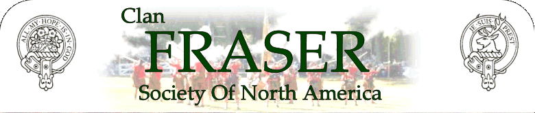
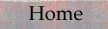
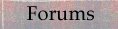
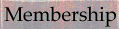
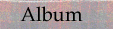
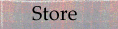
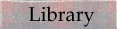

|  | |||||||
|  |  |  |  |  |  | ||
Origin of Name FraserThere are many stories about the origin of the name Fraser. Most of these involve a person growing or giving a plate of strawberries to a person of importance who either granted the right to bear strawberry flowers on their arms or gave the name Fraiser to the bearer of the strawberries. The truth of these stories is unknown but is generally believed that the name Fraser traces its origins to the French provinces of Anjou and Normandy. The French word for strawberry is fraise and growers are called fraisiers. Seemingly bearing out this connection, the Fraser arms are silver strawberry flowers on a field of blue.
Beginning of Clan FraserThe first recorded Fraser in Scotland appears to be a Simon Fraser who made a gift of a church at Keith, in East Lothan, to the monks of Kesio Abbey. From East Lothian, the Frasers moved into Tweeddale in the 12th and 13th centuries and from there into the countries of Stirling, Angus, Inverness, and Aberdeen. Fraser families were of Touch-fraser, Drumelzier and Hales, Oliver Castle, Cometoun, Fruid, Frendraught Cowie, Forgien and Tuliofour. From the family of Fruid descended the Frasers of Tain, Munlochy, Phopachy, Dunballoch, Newton, Kingillie and Fanellan.
Lords FraserThomas Fraser of Cornetoun in Stirlingshire was a descendant of the Frasers of Touch-fraser. In 1366, he exchanged lands in Stirlingshire for those of Kinmundy, Aberdeenshire. His grandson, Thomas, exchanged the estate of Cornetoun for Stanywood and Muchalls in Aberdeenshire. Andrew Fraser, became the Lord Fraser in 1633. He completed Castle Fraser in 1636. The castle near lnverurie, Aberdeenshire, is under the care of the National Trust for Scotland. The title became extinct on October 12, 1720 when Charles, 4th Lord Fraser, died without issue or collateral male heir.
Frasers of Philorth-Lords SaltounThe Frasers of Philorth are descended from the Frasers of Touch-fraser and trace their lines back to Sir Gilbert Fraser, Sheriff of Traquair and of Peebles. Sir Alexander Fraser, 8th of Philorth, was founder of Fraserburgh for which he obtained charters in 1588 and 1592. He also built Fraserburgh Castle at Kinnaird Head in 1570. In 1669, Alexander Fraser, 10th of Philorth, acquired the title of 1Oth Lord Saltoun through his mother whose ancestor’s were the Abernethy’s who held the title from 1445. Being the senior line of the Fraser family, the Lords Saltoun are chiefs of the name and arms of the whole Clan Fraser. Caimbulg Castle, home of the chiefs, is located near Fraserburgh, Aberdeenshire. The crest of the Frasers, Lord Saltoun, is a strawberry plant on a mound. The motto is "ALL MY HOPE IS IN GOD." Families of Philorth are of Ardglasse, Broadland, Findrack Forest and Durris, Fraserfield, Hospitafield, Lonmay, Memsie, Park, Quarrelbuss, Rathillock, Techmuiry, Tornaveen and Tyrie.
Frasers of LovatThe Lovat Frasers descend from a brother of Sr Alexander of Touch-fraser, Chamberlain of Scotland. Documents, dated September 12, 1367, connect a Fraser with the lands of Lovat and the Aird. Among the lands acquired by the Lovat Frasers, the prominent ones were in Stratherrick, which was very dear to the hearts of the Lovat chiefs, the church lands of Beauly Priory in Inverness-shire, part of the south shore of Beauly Firth, and the whole of Strathfarrar. Beauly Priory was founded in 1200 by John Bissett, who also built Lovat Castle. Hugh Fraser was 6th chief and became the first Lord Fraser of Lovat around 1400. The name Lovat means "a swampy plain." The old war cry "A’Mhorfhaich' means "the sea field." Castle Dounie was home of the chiefs of Lovat from 151 1 until it was burned following Culloden. The present home of the chief is Beaufort Castle, Beauly, Inverness-shire. The plant badge is yew. The war cry "Caisteal Dhuni" refers to Castle Dounie while the pipe music is Lovat’s March. The crest is a buck’s head with the motto "Je Suis Prest', old French for "I Am Ready." The chiefs are called "MacShimi" which means the son of Simon. Families of Lovat are of Abersky, Achnagaim, Ardochy, Balmain, Balloan, Belladrum, Boblanie, Bochrubin, Brae, Bught, Castleleather, Cleragh, Clunevachie, Culbokie, Culduthel, Cumiln, Drumdoe, Erchill, Errogie, Eskadale, Farraline, Foyness, Giusachan, Golford, Gortuleg, lnverallocky, Kilarlity, Kinneries, Knock, Kyllachie, Leadclune, Moniack, Mulzie, Phingask, Reelig, Ruthven, Strichen, Struy and Teanakyle.
TartansThere are a number of tartans associated with the Frasers. The most popular commercial tartans are the Modem Dress Fraser and the Hunting Fraser. Also produced are the Lovat Fraser and the Old Fraser, the latter being the oldest known, dating back to 1794. |